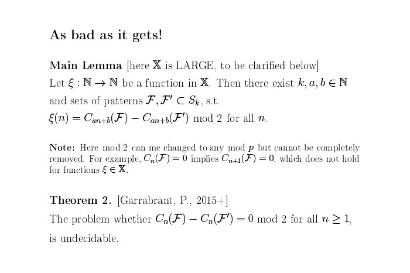

Как посчитать перестановки. Лекция в Яндексе
Автор: https://youtu.be/nzkSZf5PY_4
Некоторое время назад в московский офис Яндекса приезжал Игорь Пак — ученый с множеством научных работ, выпускник мехмата МГУ и аспирантуры Гарварда. Сейчас Игорь работает в Калифорнийском университете. Его лекция в Яндексе была посвящена различным классам последовательностей и перестановкам. В том числе прямо по ходу лекции он представил выкладки, опровергающие
— одну из ключевых в области перестановок.
Под катом — подробная текстовая расшифровка и большинство слайдов.
Доклад у меня про не самые стандартные вещи. К сожалению, перечислительную комбинаторику изучают не очень серьезно — в России она не входит в стандартную университетскую программу. В первой, вводной половине доклада я буду приводить знаменитые классические вопросы из перечислительной комбинаторики. А во второй половине пойдут более сложные вещи из тех, что мы недавно поняли. Если вы будете меня останавливать и задавать вопросы — ничего страшного.
О чем вообще перечислительная комбинаторика? Обычно мы изучаем последовательности натуральных чисел. Они бывают разные. Я выписал полдюжины последовательностей из энциклопедии «Online Encyclopedia of Integer Sequences». Я буду говорить по-русски, но все слайды составлены на английском.
Некоторые последовательности более комбинаторные, некоторые — менее. Например, число конечных групп, самая первая последовательность в этой энциклопедии, — не очень комбинаторная. Так получается, что есть две группы порядка 4. Следующая, более простая последовательность — простые числа. Число разбиений целого числа n, сумма слагаемых — мы увидим их попозже. Следующая последовательность — числа Фибоначчи. Потом число инволюций, числа Каталана, числа связных графов.
Вопрос такой: есть ли формула, которая описывает числа в каждой последовательности? Это сложный вопрос — он связан со значением формулы. Я расскажу о разных последовательностях и о том, какими бывают формулы. Потом попытаюсь это унифицировать, рассказать теорию. Мы изучаем последовательности и пытаемся понять формулы для содержащихся в них чисел.
Я начну со стандартного введения. Сам я не буду ничего определять — лучше приведу цитаты двух авторов. Первая цитата — Ричарда Стэнли, читать ее долго, но смысл такой: он считает, что самое интересное — это явные формулы, когда можно написать, что «что-то равно сумма чего-то умножить на что-то».
Херб Уилф говорит, что нет, формулы не имеют отношения к тому, сумма это или произведение, что так их определить нельзя, что формула — на самом деле алгоритм. Для нас его идея очень важна. Формула — некий алгоритм, который считает числа, стоящие в последовательности, за время, полиномиальное от n.
Но на самом деле более старая идея — в том, чтобы понять, хороша формула или нет. Смотрят на формулы, на асимптотику. Если мы можем по формуле понять, что это за число, с точностью плюс-минус 3%, то это хорошая формула. Я перечислил три стандартных определения того, что такое формула. Для нас будут очень важны все три, но алгоритмический подход будет наиболее важен.
Начнем с асимптотики. Это очень старая вещь, известная для всех последовательностей. Например, числа Фибоначчи растут очень конкретным экспоненциальным образом, числа Каталана тоже растут экспоненциально — там есть полиномиальный множитель. Речь идет о совсем старых теоремах. Это теорема распределения простых чисел, которой больше ста лет. Для числа разбиений тоже есть замечательная асимптотическая формула. Ее не очень легко доказать, но понять экспоненциональный член — немножко легче.
Для числа инволюций уже нужно немножко анализа, не слишком сложного. А вот формула для числа групп порядка <= n — очень сложная. Чтобы ее доказать, нужно знать классификацию простых конечных групп, это уже не совсем комбинаторика, совсем не комбинаторика.
Зато последняя формула, наоборот, очень простая. Число графов на n вершинах — примерно 2 в степени (…) коэффициент, n/2. И смысл ее очень простой: случайный граф является связным с большой вероятностью, которая стремится к 1, когда n стремится к бесконечности.
Эти формулы замечательные, но это аналитические формулы, не комбинаторные. И они не дают нам понимания, как посчитать эти числа. А это то, чем мы занимаемся. И чтобы понять, чем именно мы занимаемся, я начну с очень стандартного классического примера — чисел Фибоначчи.
Я дам одно из их определений. Число Фибоначчи — это число последовательностей из нулей и единиц длиной n минус 1, в которых нет двух стоящих подряд единиц. Например, последовательностей длины 2, в которых нет двух единиц подряд, будет ровно 3. Вот они: 00, 01, 10. Последовательностей длины 3, в которых нет двух стоящих подряд единиц, будет пять.
Дальше есть три формулы. Первая формула — рекуррентное от нас соотношение на числа Фибоначчи, что следующее есть сумма двух предыдущих. Вторая формула выписывает числа Фибоначчи в качестве суммы биномиальных коэффициентов. Третья формула — совсем явная: она пишет их как сумму двух степеней — золотого сечения и его обратного.
Дальше вопрос, какая из этих формул лучше? Когда я преподаю студентам, первокурсникам и второкурсникам, то традиционно начинаю с первой формулы — говорю, что это определение, а третью формулу мы выводим через некоторое время и минут 30 доказываем.
Но если нужно посчитать 117-ое число Фибоначчи, то третья формула достаточно бесполезна. Чтобы его посчитать, нужно очень четко знать, чему именно равно это золотое сечение — его надо посчитать с большим количеством знаков. А это опять сложно. Как вы это будете делать? Если подумать, это не очень хорошая формула. Формула про сумму биномиальных коэффициентов отличная, но для расчетов первая формула лучше и проще. Считаешь одну за другой, и все получится.
Уже видно, в чем вопрос. Какая формула лучше — не совсем очевидно. С точки зрения эстетики, может, третья формула лучше, а уж с точки зрения асимптотики — наверняка. Она сразу говорит, какая у числа Фибоначчи асимптотика. Но первая формула лучше для расчетов, а вторая больше подходит для того, чтобы доказывать некоторые теоремы.
Число беспорядков — очень старая последовательность. Возьмем такое число перестановок, что элемент i всегда переходит в какой-то элемент, не равный i. Если у вас перестановка длины 2, всегда существует только одна такая перестановка. Единичная перестановка не подходит, {21} подходит. Когда у вас перестановка длины три, существует ровне две перестановки, оба цикла. Остальные не подходят совсем — у них есть неподвижная точка.
И в общем опять три формулы. Первая замечательная: это число является ближайшим целым числом к числу n!/e. Перед нами очень простая формула. Простая, но асимптотическое достижение замечательное. Значение e очень сложно посчитать на компьютере, а чтобы явно посчитать число беспорядков длины 117, нужно знать e с очень большой точностью. Вторая формула объясняет первую. Грубо говоря, если вынести n! наружу, получится n! умножить на сумму первых k членов ряда Тейлора. С одной стороны, это объясняет первую формулу, а с другой стороны, тут стоят целые числа — их легко можно явно посчитать.
На самом деле, самая лучшая формула для расчетов — третья. Она дает немного неожиданное рекуррентное соотношение, которое проще всего посчитать и которое совершенно ничего не объясняет. Доказать такую формулу из определения — не очень очевидное упражнение. Непонятно, что с этим (–1) в степени n делать. Такая вот история. Для числа беспорядков видно, что не совсем понятно, какая формула хорошая, а какая плохая.
Ménage numbers, французское слово. Задача выглядит так: устраивается старомодный званый обед XIX века, позвали n супружеских пар и хотят их всех рассадить, чтобы выполнились два условия. Первое условие — мужчины чередуются с женщинами. Второе условие — супруги не сидят рядом. Задача XIX века, может, кто-то до сих пор собирает такие званые обеды. Говорят, на свадьбах такое делают.
Как посчитать это число? Если у вас есть только две супружеские пары, то усадить их не получится. Чтобы супруги сидели вместе, они должны быть друг напротив друга — значит, не будет чередования. Последовательность начинается с нуля, когда есть две супружеские пары. Но когда у нас три супружеские пары, таких рассадок уже довольно много. Вот одна из них. Предположим, у нас есть супружеские пары 1А, 2В и 3С. А, В и С мы посадим по-порядку, а 1, 2 и 3 посадим более сложным образом. Видно, что 3 сидит между А и В и не является супругом ни А, ни В.
Эту задачу можно решить. С исторической точки зрения имеется два решения. Первое — сложное, длинное и рекуррентное — исторически было получено раньше, в 1891 году. Второе решение — явная формула суммы биномиальных коэффициентов, факториалов, множителей и т. д. Когда это соотношение было получено, никто особо не обрадовался. Считалось, что это не очень нужная формула, хотя по ней легко все посчитать. А вот как только Тушард в 1934 году получил формулу в виде переменной суммы биномиальных коэффициентов, все подумали, что задача решена. Хотя с вычислительной точки зрения вторая формула гораздо лучше.
Я привожу очень классические примеры из периодической комбинаторики. Как мы с этим работаем? Сейчас мы пытаемся улучшить понимание того, что такое явная формула. Стандартный способ — брать производящую функцию. Сделать это можно двумя разными способами. Самый легкий — просто взять сумму вот такого ряда и рассматривать ее как формальную функцию от t.
Вопрос в том, есть ли какая-то формула для этой функции. Часто для последовательности нет хорошей формулы, а для функции есть. Здесь приведен пример, когда для чисел Фибоначчи у нас совсем хорошая формула — очень рациональная для производящей функции. Но для чисел Каталана берется число триангуляций n+2-угольника. Их Эйлер придумал и изучал в Санкт-Петербурге в 1750-х годах. Производящая функция в данном случае будет не рациональная, а алгебраическая.
Давайте посмотрим другие примеры — скажем число инволюций. Инволюция — перестановка, которая в квадрате равна единице. Это значит, что она состоит из циклов длины либо 1, либо 2. Для числа таких инволюций нет хорошей формулы, которая бы позволила представить это как сумму биномиальных коэффициентов. Однако существует очень хорошее рекуррентное соотношение. Понятно, как такое доказывать?
Берем последний элемент n. Он либо является неподвижной точкой — тогда число перестановок получается на 1 меньше, — либо находится в транспозиции с каким-то еще элементом. Есть n-1 способов выбрать такой элемент, и остается n-2 элементов, с которыми после этого нужно что-то сделать. Из определения получается такое простое рекуррентное соотношение. У него есть замечательная производящая функция, которую можно явно написать. Заметим, что это экспоненциальная производящая функция. Мы берем tn>an/n! — как будто смотрим производящую функцию для вероятностей.
И тут есть хорошая формула et+t2/2.
Вот новый способ посмотреть на явную формулу. Для числа разбиений n есть несколько способов представить n в качестве суммы слагаемых. Например, 4 = 3 + 1= 2 + 2 и т. д. — всего существует пять способов записать 4 в виде суммы слагаемых. Но производящая функция тоже замечательная. Это тоже придумал Эйлер, в 1738 году. Бесконечное произведение — вот что это будет. Перед нами не такая хорошая функция, как мы видели раньше. Если у нас есть бесконечное произведение, то не очень понятно, что с ним делать. Речь идет о довольно сложной функции.
— Скажите для графов.
— Для связных графов на n вершинах имеется рекуррентное отношение, но оно квадратичное и коэффициенты у него будут биномиальными. Квадратичное соотношение для графов есть, но я его не помню наизусть. Посчитать его можно довольно быстро, но оно не входит в эту тему.
Теория. Мы хотим расклассифицировать как можно больше последовательностей. Берем несколько классов. Первый класс — рациональные последовательности. Они рациональны, если их прозводящая функция рациональна, то есть представляет из себя соотношение двух полиномов. На самом деле это совершенно эквивалентно простому рекуррентному соотношению на данные числа, которое обобщает числа Фибоначчи. Вот самое простое, что можно придумать. На удивление, существует довольно много последовательностей, которые удовлетворяют этим рекуррентным соотношениям. А вот последовательностей проще, чем рациональные функции, — довольно мало. У всех рациональных последовательностей очень простая асимптотика, их очень легко изучать, про них все известно.
Следующий уровень — алгебраический. Это алгебраические последовательности, которые обобщают формулу A(t) = 1 – √(1 – 4t)/2t.
Предположим, наша производящая функция удовлетворяет некому алгебраическому уравнению с полимиальными коэффициентами. Таких последовательностей тоже довольно много: у чисел Каталана есть такая последовательность, у числа Моцкина, еще у многих других. Но оказывается, что это не самый большой класс. Мы будем изучать класс побольше — биномиальные суммы. Мы берем суммы, много биномиальных коэффициентов. Я пишу — суммировать по всем векторам на решетке, но на самом деле то, где альфа и бета, — некие линейные функции. Если в биномиальном коэффициенте какая-то функция становится отрицательной, то мы считаем, что это 0. Интересно только, когда эти числа конечные. И таких случаев довольно много.
В этом примере приведен как раз такой случай. Перед нами сумма каких-то биномиальных коэффициентов. Здесь — от 0 до n/2, но можно и отпустить, сделать больше, просто биномиальный коэффициент исчезнет, станет нулем.
В результате у нас появляется много разных последовательностей, биномиальных сумм. В них входят и числа беспорядков, и числа рассадок за столом. Все это можно понять с точки зрения таких биномиальных коэффициентов. Сверху много факториалов, снизу тоже — все можно понять. Речь идет о большом классе, но нас интересует еще больший класс: P-рекурсивные последовательности. Их можно определить двумя способами. Самый понятный способ — когда существует рекурсивное соотношение на эти числа, когда коэффициенты являются не константами, как в рациональном случае, а полиномами, зависящими от n. Если вы помните, это сложное и не очень точно записанное рекуррентное соотношение, придуманное Лукасом, — является типичным. Но такие соотношения есть для многих других последовательностей.
Типичный пример — n!.. Он по определению (n – 1)! * n.
Другой пример — числа Каталана. Вы помните, что это какое-то отношение двух биномиальных коэффициентов. Получится некая рациональная функция, которая зависит от n. Значит, ее можно записать как рекуррентное соотношение, которое должно равняться нулю.
Это не очень сложная теорема. Она означает, что производящая функция удовлетворяет такому обыкновенному дифференциальному уравнению с полиномиальными коэффициентами. Вот вам другой способ понять, как устроены последовательности. Для нас Р-рекурсивные последовательности будут самым главным классом. В него входят последующие теоремы, которые написаны внизу и состоят в том, что все предыдущие классы лежат внутри этого. Речь про самый большой класс. Для алгебраических последовательностей это не совсем очевидно, а доказать такое для остальных немного проще.
Конечно, этот класс не включает все примеры. Скажем, простые числа сюда не входят — для них нет никакого полиномиального соотношения. Точно так же нет полиномиального соотношения для числа связных графов. С ними — более сложный пример, который сюда не относится. Плохо, что есть такие примеры, когда число разбиений сюда не входит, но замечательно, что Р-рекурсивные последовательности просто по определению можно посчитать за полиномиальное время. То, что здесь написано, будет важно для нас. У нас есть класс последовательностей, все из которых можно посчитать.
Прежде чем мы начнем их считать, приведу некое следствие. Оно состоит в том, что в данном классе уже все хорошо с точки зрения асимптотики. Если у вас есть Р-рекурсивная последовательность, то асимптотическое поведение уже очень хорошее: имеется константа, n!, какие-то степени, λnnα(log n)β. Все замечательно работает, но, к сожалению, эта теорема не доказана. Некоторые считают ее теоремой, но она ей является только в частных случаях. Однако для нас, в принципе, как раз и важен такой частный случай — что если есть неотрицательная Р-рекурсивная целочисленная последовательность, растущая не выше, чем экспонента, то поведение у нее очень простое: λnnα(log n)β. У нее хорошая и простая асимптотика. Этот класс очень большой и включает много разных комбинаторных последовательностей, которые мы хотим изучать. Р-рекурсивные последовательности — самый важный для нас класс.
Есть еще один более общий класс, про который довольно мало что известно. Речь идет о последовательностях, у которых производящая функция удовлетворяет алгебраическому дифференциальному уравнению. Если взять какое-то количество производных этой производящей функции, то все вместе они будут удовлетворять некоему полиномиальному уравнению. Это более общий класс. К сожалению, результатов про его асимптотику существует довольно мало. Вот один пример. Возьмем альтернирующие перестановки, которые начинаются с какого-то числа, а потом идут больше-меньше, больше-меньше. Например, существует ровно две таких перестановки длиной 3 — 1, 3, 2 и 2, 3, 1. Существует пять перестановок длиной 4 и т. д.
Для числа таких перестановок есть довольно сложное рекуррентное соотношение. Его можно переписать как уравнение, которое является не обыкновенным дифференциальным, а алгебраическим дифференциальным: 2A' = A2 + 1. В таком виде оно решается — производящую функцию можно будет записать явным образом: tan(t) + sec(t). Перед нами стандартный пример комбинаторной задачи, у которой есть явное решение для производящей функции, но про сами числа ничего хорошего сказать нельзя, это очень плохие числа. Их можно посчитать, но все последовательности, которые удовлетворяют алгебраическим дифференциальным уравнениям, можно посчитать за полиномиальное время — n-й член последовательностей считается прямо из определения. Если вы возьмете уравнение и распишете его, то главный член в этом соотношении всегда будет с коэффициентами.
В качестве примера или иллюстрации того, что эти алгебраические дифференциальные уравнения — довольно сложная штука, приведу теорему Якоби. Якоби доказал, что такая функция Дирихле удовлетворяет некому алгебраическому дифференциальному уравнению, но оно довольно сложное и занимает больше, чем одну строчку, поэтому я решил его не выписывать. Эта задача была решена 150 лет назад, но, с другой стороны, если взять не tn2, а tn3, то такая задача открыта — и открыта она уже 150 лет. Неизвестно, удовлетворяет ли эта сущность алгебраическому дифференциальному уравнению. Сформулировать очень легко, а доказать очень сложно. Речь идет о настолько сложном классе, что про него довольно сложно что-то сказать. Мы про него ничего не знаем.
Расскажу о классе 4. Про него многое известно, в частности про асимптотики и т. д. Конец примеров и теорий. Прежде чем я начну рассказывать более сложные вещи про перестановки, отвечу на вопросы.
— А в четвертом экспоненциальная проводящая функция?
— Это неважно. Это легко понять из рекуррентного соотношения, там можно всегда на n умножать.
— Вопрос про производящую функцию. Если использовать аппарат периодических чисел, наверное, они лучше будут сходиться?
— Понятия не имею. Вопрос не в том, как они сходятся, а в том, можно ли формально записать в неком явном виде то, какому уравнению они будут удовлетворять.
Если у вас последовательность представлена как сумма n! * tn, она вообще нигде не сходится. С комбинаторной точки зрения это замечательная производящая функция, мы с ней классно работаем, она defined, коэффициент n! удовлетворяет полиномиальному уравнению, все хорошо. Вопрос сходимости нас не волнует никак, это формальная функция.
— Если по ультраметрике все решается, может, некоторые случаи решаются радикально проще?
— Ничего не могу сказать. Я не очень понимаю, о чем вы говорите.
Будут ли еще вопросы? Я вам рассказал примерно двухсеместровый курс комбинаторики за полчаса. Все ли вы выяснили?
— То есть если мы можем вычислить все за конечное время или записать формулу — то это хорошее понимание?
— Я про это пока ничего не сказал, но в принципе, да, все эти классы можно посчитать за полиномиальное время. Но существуют последовательности, например число всех графов на n вершинах — 2 в степени биномиальный коэффициент n/2, — которые не входят в этот список и растут быстрее, чем факториал. Конечно, посчитать такую последовательно очень легко — вопрос в том, что мы захотим сделать с теорией. Я расписал четыре главных класса. Один класс — самый большой, про него известно поменьше. Но для всех них можно все посчитать за полиномиальное время.
С другой стороны, понятно, что существуют последовательности, где подсчет будет очень сложным. Если мы возьмем, например, число групп порядка n, то как вы будете их считать? Давайте возьмем что-нибудь проще, связные графы, только вместо labeled напишем unlabeled. Это значит, что вы берете графы с точностью до изоморфизма. И как вы будете это считать? Проверить изоморфизм в такой модели не сложно: en туда или сюда — не проблема. Просто число этих графов такое большое, что вы устанете перебирать каждый. Хотелось бы понять, какие последовательности можно посчитать, а какие нельзя. Во всех этих графах — можно.
Теперь рассмотрим классы перестановок. С этого момента я буду говорить только о перестановках. Дам следующее определение. Сотрудники Яндекса меня отругали — я не знал нужного слова по-русски. Я буду использовать слово «паттерн». Мы говорим, что одна перестановка содержит другую, когда она, записанная как 0-1-матрица, содержит другую как подматрицу. Например, перестановка (5674123) содержит подматрицу (321) — ее просто видно.
С другой стороны, она не содержит (4321), потому что в этой перестановке нет убывающей подпоследовательности длины 4. А (321) — содержит. Выкидываем первый столбец, пятый, седьмой, то же самое со строками.
Так вот, эту маленькую перестановку мы будем называть паттерном. Мы ее или несколько таких зафиксируем, после чего начнем изучать последовательность числа перестановок, которые не содержат ни одного паттерна. Не содержать паттерна — значит избегать его, σ avoids ω.
Это очень важное определение. Я хочу, чтобы кто-то поднял руку и сказал: «Да, я понял».
Окей, еще раз. Мы скажем, что одна перестановка содержит другую, если соответствующая 0-1-матрица содержит другую. Есть две перестановки — большая и маленькая, и видно, как одна содержит другую как подперестановку. После чего мы считаем перестановки, которые избегают некоторых других перестановок. Простой пример. Предположим, паттерн — перестановка (12). Сколько существует перестановок длины 7, которые избегают такого паттерна? Одна. Профессор Карасев знает, что если избегать паттерна (12), то перестановка должна быть всюду убывающей, никакие два не должны возрастать. А такая перестановка только одна: (7654321).
Но у нас может быть не один, а несколько паттернов. Тогда мы пытаемся избегать их всех.
Давайте приведу более конкретный пример. Рассмотрим перестановки, которые избегают паттерна (123), то есть в перестановке нет возрастающей подпоследовательности длины 3. Зная стандартную комбинаторику, можно ответить так: это значит, что она состоит из объединения двух убывающих последовательностей, которые таким образом перемешаны. Оказывается, это старая теорема Макмахона 1915 года — что число таких перестановок равняется числу Каталана. Поэтому если взять другую перестановку длины 3, неважно какую, то для всех из них это будет число Каталана. И число перестановок, которые избегают паттерна (213), тоже будет числом Каталана. Это теорема Кнута, которую он доказал, но с точностью до симметрии, что есть два типа паттернов длиной 3: один такой и один такой. Остальные получаются переворотом. Или можно вычесть 4, 4, 4 — всю перестановку. Тогда подсчет будет точно таким же.
Я не доказал теорему, это хорошее упражнение, особенно вот эта часть не так очевидно считается. Но посчитать можно. Это настолько знаменитая теорема, что у нее сейчас имеются десятки доказательств. Некоторые из них очень красивые, объективные, некоторые довольно сложные, рекуррентные, но перед нами довольно стандартная теорема, с которой все начинается.
Наука, которой мы занимаемся, довольно большая. Есть довольно много других случаев. Например, если у нас есть пункт 2, три перестановки — значит, мы избегаем и такого паттерна, и такого, и такого. Число окажется довольно маленьким, последовательность будет равной последовательности Фибоначчи. Оказывается, что с помощью этого можно получить много разных других последовательностей. В частности, можно изучать последовательности, которые получаются в том случае, если вы избегаете паттерна (1342). И для каждого паттерна или набора паттернов можно попытаться посчитать, к какому классу принадлежит получающаяся последовательность чисел перестановок, которых избегают указанные паттерны.
И общая задача — понять, как от множества паттернов зависит класс, куда попадают эти последовательности. Мы считаем перестановки, которые не содержат каких-то подперестановок, и пытаемся понять, как они устроены.
Гипотеза Нунана и Зайлбергера, которой много лет, звучит примерно так: если у нас есть любой набор паттернов, то последовательность числа перестановок, которые избегают этого набора паттернов, всегда будет Р-рекурсивной, а эквивалентная производящая функция будет удовлетворять обыкновенному дифференциальному уравнению.
Причина этой гипотезы состоит в том, что имеется несколько сотен примеров, для которых это утверждение верно. Некоторые из них я привел на предыдущем слайде. Но теорема, которую мы недавно доказали, состоит в том, что гипотеза неверна, хотя опровергнуть ее довольно сложно. Мы придумали набор из примерно 31 тысячи перестановок 80 элементов и доказали, что для указанной последовательности нет рекурсивного соотношения с полиномиальными коэффициентами.
Я не могу вам привести 31 тысячу перестановок — даже не буду пытаться. Чуть-чуть объясню, откуда все берется, но мы не пытались ничего улучшить. Может, можно сделать меньше. Что такое несколько тысяч перестановок между друзьями? Ерунда. Тем более, что речь о перестановках всего 80 элементов. Такова наша главная теорема.
Чтобы вы попытались ее понять, сначала объясню историю, а потом приведу кое-какие теоремы, иллюстрирующие, откуда все берется и как это в принципе доказать. Вопрос, о котором идет речь, — старый. Он возник в 90-х годах, когда эта область стала бурно развиваться. Не буду рассказывать, что такое усиленная версия, но Апкинсон доказал: вопрос Нунана и Зайлбергера эквивалентен вопросу Гесселя — гипотезе 1990 года. Но сам Зайлбергер передумал и в какой-то момент решил, что гипотеза, скорее всего, неверна. Но уже в этом конкретном случае, если есть только одна перестановка длины 4, (1324), последовательность перестановок, не содержащих такой паттерн, не будет Р-рекурсивной. Однако это открытая задача.
Наш пример состоит из 31 тысячи перестановок, а здесь только одна перестановка длины 4. Казалось, какая ерунда, можно сесть и посчитать, а вот не получается. Даже для Р-рекурсивных последовательностей очень сложно что-то доказать. Если последовательность Р-рекурсивна, то вы можете привести соотношение в явном виде. Если последовательность не Р-рекурсивна, то как вы это докажете? В этом и состоит сложность.

Что же мы на самом деле сделали? Мы доказали более сильный результат. Он состоит в том, что для довольно большого класса функций существует два таких набора паттернов F и F’, что разница между числом перестановок, содержащим один и другой по модулю 2, как раз и будет той самой функцией, которую мы выбрали. Для примерного понимания: это будет вычислимая функция. Для всех вычислимых и очень плохих функций мы можем придумать два очень плохих набора паттернов.
Теорема 2. Предположим, у нас есть два набора паттернов, F и F’. Мы хотим понять, всегда ли их разница является четной? Речь про разницу для числа перестановок, которое содержит один паттерн, минус число перестановок, содержащее другой паттерн. Иначе говоря, у них всегда будет одна и та же четность или нет?
Оказывается, это неразрешимая задача. Нет никакой машины Тьюринга, которая может решить ее — в которую вы положите F и F’ в качестве входящих данных и исходящий ответ будет «Да» или «Нет». В какой-то момент четность поменяется.
Задача о том, какова четность у числа перестановок, избегающих данного набора паттернов, может быть сколь угодно сложной. Я привел именно такой пример — не очень хотел много писать, тут и без того много степеней двойки. Думаю, что их может быть и больше.
Следовательно, для любого k существует два таких набора перестановок, что в первый раз они поменяют четность очень далеко. Если бы они поменяли ее близко, можно было бы написать машину Тьюринга и проверить четность до этого места. Значит, существует два набора, у которых много-много одинаковой четности. А потом — раз, стали разные. Для этого нет никакой причины, но именно так все и работает.
Перейдем к другому, стандартному следствию из той же теоремы разрешимости. Существует два набора перестановок, для которых нельзя ни доказать, ни опровергнуть, что четность у них всегда одинаковая. Она не зависит от вашей аксиоматики. Такие наборы паттернов — в них можно засунуть любую логику. Это примерно то же самое, что и континуум-проблема. Речь тоже идет о задаче, которая является независимой от аксиом Цермело-Френкеля с выбором.
Значит, посчитать число очень сложно, но мы не можем доказать, что это сложно. Мы можем доказать это только по модулю 2.
Мы до сих пор не знаем, является ли справедливым выражение Р = NP. Зато мы знаем много других вычислительных задач: мы опять же не знаем, чему они соответствуют, но можем много чего написать.
Что такое NP? Например, если задача содержит Гамильтонов цикл, то она лежит в NP. Если я дам вам Гамильтонов цикл и скажу проверить, является ли он на самом деле Гамильтоновым, то такую задачу можно выполнить за полиномиальное время.
Дальше имеется ⊕P. Мы говорим, что хотим посчитать четность числа Гамильтонова цикла в графе. Это очень простая и естественная вещь. Но оказывается, что задача Р = ⊕P довольно похожа на Р = NP — или нет. Если сказанное было бы правдой, если бы Р равнялось ⊕P — тогда вся полиномиальная иерархия схлопывается, все можно решить за полиномиальное время на машине с вероятностями. То есть оказывается, что способность указать четность числа Гамильтоновых циклов в графе очень показательна. Если вы такое можете сделать, то вы можете вообще все посчитать, в частности — число Гамильтоновых циклов в графе и т. д. Четность — очень ценная вещь.
Мне нужно то же самое, но когда у нас все экспоненциальное. Помните, что нам надо за полиномиальное время посчитать n-й элемент последовательности. Но imput size n состоит из log (n) bits, то есть n можно записать с помощью log (n) нулей и единиц. Поэтому задача, которая решается за полимиальное время от n, на самом деле решается за экспоненциальное время от input. Поэтому нам нужно все абсолютно то же самое, но вместо P ≠ ⊕P мы пишем EXP ≠ ⊕EXP. Можно подумать, что у нас input вводится в unary, not in binary. Такой вот вам двухминутный курс Computation Complexity.
Вот наша третья теорема, которую мы доказали. Если EXP ≠ ⊕EXP, то существует конечный набор — тоже примерно 31 тысяча — таких паттернов, что последовательность числа перестановок, не содержащих эти паттерны, не может быть получена за время, полиномиальное от n. В частности, есть случаи, когда не будет ни defined, ни AD, но это теорема 1 без дополнительного условия, а это — при условиях из Computation Complexity. Речь идет об условной теореме, а теорема один была безусловная. В каком-то смысле та сильнее, в каком-то смысле — эта.
Значит, если у вас есть задача и вы, например, уверены, что посчитать четность некого числа связных графов на n элементах с точностью до изоморфизма — сложно и невозможно за полиномиальное время, то посчитать последовательность этих перестановок тоже очень сложно.
Я привел один из возможных ответов на старый вопрос 1982 года: существует ли какая-то разумная комбинаторная последовательность, для которой не было бы алгоритма подсчета за полиномиальное время? Насколько она естественная или нет? У нас все-таки 31 тысяча перестановок длины 80 — тут можно спорить, естественная эта задача или нет. Но, по крайней мере, весь класс довольно естественный и мы при дополнительных условиях из Computation Complexity можем сказать, что да, эти числа нельзя посчитать за полиномиальное время, и что даже четность нельзя посчитать за полиномиальное время.
Давайте я пропущу всякие автоматы и приведу лемму, понять которую довольно легко. Это очень важная лемма, на ее доказательство мы потратили несколько часов, а придумывали мы ее где-то полгода. Итак, лемма 1. Возьмем полиномиальную рекурсивную последовательность. Запишем бесконечную последовательность из нулей и единиц — будем просто смотреть на четность элементов этой Р-рекурсивной последовательности. Первая четная — поставим 0, вторая нечетная — поставим 1 и в итоге напишем бесконечное слово из нулей и единиц. И оказывается, что существует конечное слово из нулей и единиц, которое не является подсловом указанной бесконечной последовательности. Вот такая лемма. В принципе, не сложная, но очень важная.
Вернемся к определению Р-рекурсивной последовательности. Если все эти соотношения равны нулю, то и r0(n)an + r1(n)an-1 будет равно нулю. Но так это не работает. Поскольку надо делить, лемма получается довольно сложной, но не слишком.
Решение такое. Мы строим явную машину Тьюринга. Она в неком формальном смысле записывает последовательность 0, 1, 0,0, 0,1, 1,0 1,1, 0,0,0, 0,0,1 0,1,0, которая противоречит сказанному и содержит всевозможные конечные подслова.
Теперь самая сложная лемма. Она состоит в следующем: для любой машины Тьюринга мы можем создать два набора паттернов и эмулировать машину паттернами так, чтобы записывалась любая последовательность из нулей и единиц. Я довольно мало что сказал, не хочу расписывать подробно. Но чтобы было немного понятней, откуда берется матрица 80 на 80, вот.
Мы берем матрицу размером не больше, чем 8х8. Но это блочные матрицы, и в них мы расставляем какие-то буквы, соответствующие неким блокам 10х10, которые мы запрещаем. Один набор содержит немного больше, чем другой, но в итоге у нас получаются матрицы примерно такого размера:

Единственные матрицы, которые избегают всех подматриц, — те, которые идут вдоль диагонали и прямо кодируют то, что машина Тьюринга делает. Общая идея состоит в том, что мы берем машину Тьюринга и симулируем ее с помощью простых комбинаторных объектов, паттернов. Мы делаем так, чтобы большие матрицы, которые избегают подматриц, имели некий вид, похожий на то, как работала сама машина Тьюринга.
Не могу ничего сказать про доказательство — оно довольно длинное и техничное. Мы используем довольно много всего. Я сказал про блоки 8х8 и про матрицы 10х10. Гипотеза, которую я могу сформулировать… Помните лемму 1 про последовательность нулей и единиц? Это очень слабый результат. Его достаточно для нашей теоремы, но мы думаем, что если эта последовательность Р-рекурсивна, то число возможных подслов из нулей и единиц, имеющихся там в принципе, — не больше, чем линейное. Мы не можем это доказать, даже полиномиально. Все, что мы можем, касается числа меньше, чем 2n. Но также мы можем взять число меньше, чем 1 + εn или чем какое-то ε, однако мы можем доказать, что для числа из подслов нулей и единиц у Р-рекурсивной последовательности найдется субэкспоненциальная функция. И как раз эту гипотезу мы доказали.
Мы доказательство еще даже не опубликовали пока. Оно усиливает предыдущую теорему. Мы умеем доказывать, что наш набор не только не будет Р-рекурсивным, но не будет даже ADE. Это последний класс, который мы сформулировали. С помощью паттернов можно задавать очень плохие последовательности. Ключевая идея состоит в том, что не существует последовательности, удовлетворяющей алгебре дифференциальных уравнений, которые являются четными только для K! + K и только для таких n.
Это очень быстрорастущая последовательность. Речь про функцию Дирихле, там были n2. Это случай, когда одни были нечетными, а остальные — четными. Это К! + К, и мы говорим, что последовательность, нечетная в этом случае и четная в остальных случаях, никогда не удовлетворяет алгебре дифференциальных уравнений. Вот я вам и рассказал про лемму, которую мы доказали и используем.
Откуда все это берется? Как до такого можно додуматься? Есть две причины, по которым мы до этого додумались. Одна состоит в том, что мы довольно хорошо понимаем, как работает замощение или Wang tiles. Мы замощаем огромный квадрат маленькими квадратиками 1х1. Предположим, границы квадрата расписаны неким периодическим образом. Имеется конечный набор этих Wang tiles, маленьких подквадратиков. Речь про очень стандартную и знаменитую задачу: можно ли замостить всю плоскость в случае, когда у нас нет границы, а есть просто набор? Это неразрешимая задача, а кроме того, это еще и знаменитая теорема.
Но в случае, когда у нас есть конечный квадрат с зафиксированными границами, эту задачу тоже довольно много изучали. Про нее все понятно. Эта задача такая же, как наша, они немножко похожи. В ней все можно делать сколь угодно сложно. Но из-за того, что объекты проще, про них все довольно хорошо известно.
Задачу Концевича не буду рассказывать.
Быстро расскажу несколько гипотез. Первая такая: я вам дам два набора запрещенных паттернов и число перестановок, которые запрещают 1. Верно ли, что оно всегда равно тому, которое не содержит другое? Мы считаем, что такая задача неразрешима, но это не следует из того, что мы доказали. Из того, что мы доказали, следует, что она неразрешима по модулю 2, то есть что четность неразрешима. Может быть, они сразу начинают быть очень разными, расти очень по-разному? Мы не знаем, верно это или нет.
С другой стороны, мы считаем, что если у нас есть только одна перестановка, то все задачи разрешимы. Можно понять, что число таких равно числу таких. Это, может быть, даже можно понять за полиномиальное время — мы не знаем. У нас набор из 31 тысячи паттернов. Что будет, когда перестановка только одна, сказать сложно.
Однако мы думаем, что Зайлбергер прав и последовательность перестановок, не содержащих такую подперестановку, не будет Р-рекурсивной.
Последняя гипотеза говорит о том, что задача посчитать числа, которые не содержат паттерны, сложна в своем вычислительном классе. Даже чтобы ее просто сформулировать, потребуется некоторое время.
Собственно, все. Всем спасибо.